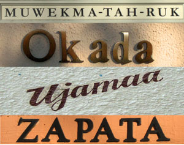
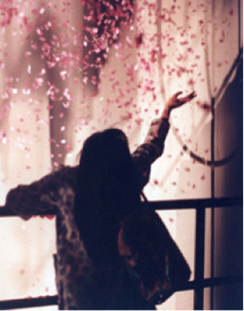

Are Ethnic Dorms Insensitive?
Since its inception, the Review has vehemently opposed ethnic housing primarily on the basis that it supports racial separatism. Not, however, until listening to my peers’ diverse views on the issue in the ResEd program “Crossing the Line” did I begin to apprehend how truly flawed and prejudiced ethnic housing is.
Iran: The Real Problem
While Daily articles in the past few weeks have addressed Israeli and Palestinian issues, and in particular, what we as Stanford students can do to help resolve the conflict, none have dealt with the primary obstacle to Palestinian statehood. Columns about the tragedies of the conflict have ignored Iran’s efforts to perpetuate it. If Stanford student groups like SCAI intend to improve the Palestinian situation, they ought to stop demonizing Israel for its counter-terrorism measures, and start drawing attention to the Iranian regime that funds the very terrorists whose actions make peace impossible. The Iranian threat has now reached a point where, if it remains unchecked, the foundations of fanaticism will be permanently secured, and peace will cease to be a possibility.
Obama Then, Obama Now
Obama-mania has swept the country; throes of Americans are excited about the entrance of a strong African American candidate in the presidential race. Unfortunately, a fair deal of this excitement only comes from looking at him as a charismatic, attractive fresh face, without much familiarity with his positions on the issues or capacity to the do the job of the president. What has Obama accomplished that earns him your vote? Does his experience measure up to those of his competitors?
Russia Returns to Dictatorship
Alexander Litvinenko made headlines for weeks when he fell violently ill with radiation poisoning last November. Litvinenko died on November 23, and the world mourned. But when a teapot laced with sky-high levels of polonium-210 turned up in a London hotel a few weeks later—and when British officials announced that forensic evidence and British intelligence indicated a state-sponsored assassination carried out by Russian security services—the collective world media eye hardly blinked.
Obama on Race
Many Americans consider Barack Obama to be a “fresh face” in U.S. politics and a welcome change from the traditional D.C. politicians that we distrust. Of late, Obama has carefully crafted a public persona that suggests he is above race—that, as the son of a Kenyan father and a white mother, his politics transcend the black-white racial divide. As The Economist wrote about Obama in August 2004, he is a “post-racial candidate” who “appeals just as strongly to white suburban voters as he does to blacks.”
|
Taking Green to Main Street
Thomas L. Friedman, the New York Times columnist and author of such books as From Beirut to Jerusalem and The World is Flat, spoke to Stanford students, community members, and global business leaders on March 2 about the urgent need for the United States and its citizens to become “geo-green” and undertake “the biggest industrial project mankind has ever witnessed” to confront the global energy and climate crises.
Smoke Signals
Finals Week Edition. Inside our dorm rooms, it’s the most miserable time of the year, but outside, it’s the happiest.
The Newest Skeptics: James Cameron, Gnostic Novels and Faith’s Trajectory
In December 1945, two peasants on the outskirts of the Egyptian town of Nag Hammadi were digging for fertilizer at the base of a cliff. Muhammad and Khalifah ‘Ali of the al-Samman clan had tethered their camels to some nearby rocks and had proceeded to wrestle aside a boulder in search of decent soil. Beneath that rock, they instead found several clay jars, all 60cm or more in height and sealed at their tops with bitumen. Despite Muhammad’s admonitions that the jars might contain harmful “jinns”, Khalifah cracked open one of the vessels with his pick, claiming that it was equally likely that they contained gold.

“Secret Love in Peach Blossom Land” Not So Secret
It might have been difficult to foresee the challenges facing Stan Lai. Currently a visiting professor at Stanford, the drama department website describes him as “one of the most influential playwrights/directors in Asia” and “one of the most important voices in contemporary Chinese-language theatre.” The posters around campus for his recent production boast a quote from the January 10, 2007 issue of The New York Times: “[Secret Love in Peach Blossom Land] may be the most popular contemporary play in China… the laughter gives way to sobs and the audience is left to contemplate the burdens of memory, history, longing, and love – and the power of theater itself.” What could he attempt that would not guarantee the acclaim he has received over his past work?
Obama Plays the American People on Race
Presidential campaigns are a tricky business. Usually the candidate is someone experienced in politics who the American people know. Barack Obama’s time in the national spotlight is coming up on only three years this summer, and so he has written a book, The Audacity of Hope, to compensate for his lack of experience and to introduce him to us. There is one inherent problem with this: a candidate cannot script every moment of his career, as much as he would like to. A book, however, is very scripted. Without the experience and with only his book, the only way to get a sense of the ‘real’ Obama is to look through the scripted book and search hard for Obama. I think I have found him.
|